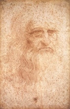

Leonardo da Vinci (1452-1519) was an Italian polymath who embodied the Renaissance ideal of a "universal genius." He excelled as a painter, sculptor, architect, inventor, scientist, and engineer. His insatiable curiosity and unparalleled creativity led him to make groundbreaking contributions across a wide range of disciplines.
As an artist, Leonardo is best known for masterpieces such as the Mona Lisa and The Last Supper, works that exemplify his mastery of composition and use of perspective. Beyond his art, Leonardo's notebooks reveal a visionary thinker, filled with anatomical sketches, designs for flying machines, and studies of natural phenomena, demonstrating his efforts to understand and replicate the workings of nature.